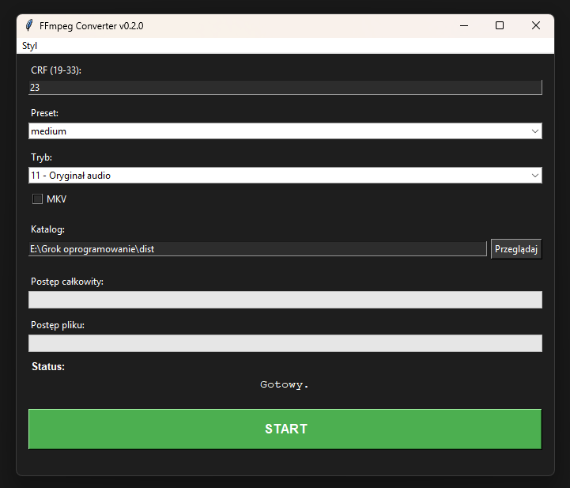

FFmpeg Converter v0.2.0
Prosty konwerter wideo/audio z GUI w Pythonie. Działa na Windows bez instalowania Pythona – pobierz .exe i używaj od razu!
Funkcje
- Konwersja do H.265 (CRF 19–33)
- Skalowanie: 4K, Full HD, HD, SD, Mobile, 50%, 25%
- Ekstrakcja MP3 (128 kbps)
- Tray icon – minimalizuje do paska
- Paski postępu (plik + całość)
- Tryby z opisami (bez „+”)
Jak to wygląda?

Pobierz
📥 Pobierz .exe (v0.2.0)
(Wrzuć plik .exe do folderu – zbuduj przez PyInstaller)
Źródła
Kod źródłowy (.pyw) |
GitHub